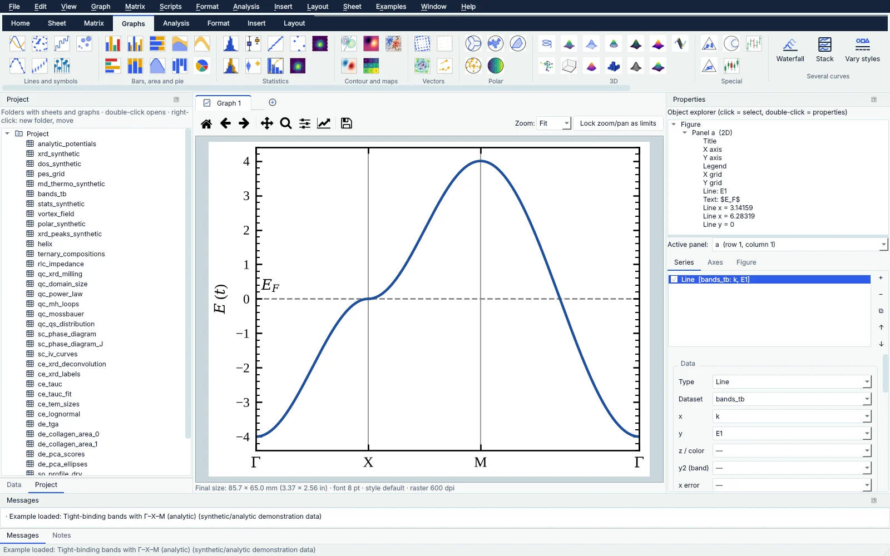
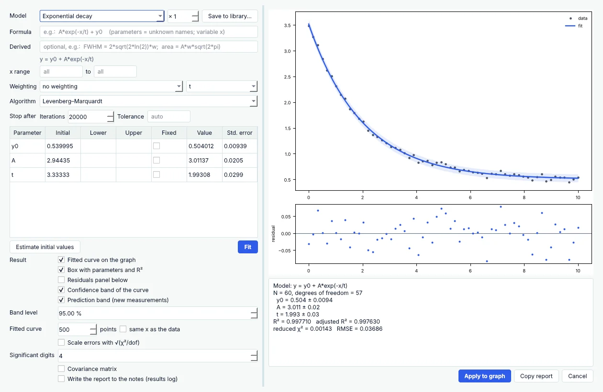

SciTrace-Graphs
Graphs and data analysis: editable publication figures, curve and peak fitting, statistics, matrices, Python scripts, and migration of Origin, SciDAVis and QtiPlot projects.
SciTrace-Suite · Windows, macOS & Linux
A family of desktop applications for research. It starts with SciTrace-Graphs — publication figures and data analysis in the tradition of Origin, SciDAVis and QtiPlot — and grows into symbolic mathematics and interfaces for DFT and molecular-dynamics codes.
Testing phase: the downloads are open to invited testers. No account, no telemetry.

Click the image to enlargeApplications
The applications share the same project files, sheets, editable graphs and export, so a result computed in one is a figure in the other without copying numbers by hand.
Graphs and data analysis: editable publication figures, curve and peak fitting, statistics, matrices, Python scripts, and migration of Origin, SciDAVis and QtiPlot projects.
Symbolic mathematics in notebooks: algebra, calculus, equations, series and matrices with typeset output, interactive parameters and graphs straight into SciTrace.
Input and output for SIESTA, Quantum ESPRESSO, VASP, CASTEP and FHI-aims: validated inputs, convergence, band structures, densities of states, charges and phonons.
LAMMPS, GROMACS and NAMD trajectories, materials and biomolecules: visualization, RDF, MSD, diffusion, clusters and structural analysis, with results as editable sheets and graphs.
SciTrace-Graphs
Double-click a title, an axis, a curve or a legend and its properties open. Fit the data, analyse the peaks, and export the figure at the exact size the journal asks for.

Principles
The applications run on your computer and keep your data in your files. Nothing is sent anywhere unless you ask for it — loading a data file from GitHub, for example.
FAQ
Something missing? Open an issue in the downloads repository; the guides cover each part of SciTrace-Graphs in detail.
SciTrace-Graphs is in a testing phase: the downloads repository is private and open to invited testers. Ask the author for access; a public release follows the testing phase.
Windows 10 and 11 (64-bit), macOS 11 or later on Apple silicon and on Intel, and Linux x86_64 (AppImage or a plain folder).
After SciTrace-Graphs reaches version 1.0 and gains its AI assistant. They will share its project files, sheets and graphs.
Yes. Up to version 0.14 the suite was called SciPlot. It was renamed SciTrace in 0.15 because the
name was already used by other scientific software. Projects saved by SciPlot
(.splot.json) open as before, and the preferences carry over.
No. They work offline. The network is used only for an action you take, such as reading data from a GitHub repository.
Start with your next figure
Publication figures and data analysis for Windows, macOS and Linux.